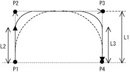

ArchMoveV
（ライブラリ）
【Ver.3.2 以降の6軸ロボットのみ】

アーチモーションを実施します。

ArchMoveV (<目標位置（Ｐ型変数）>、<アプローチ長>)

現在位置P1と目標位置P4および経由点P2、P3の４点にてP&P動作を行ないます。
経由点P3は目標位置に対して指定した<アプローチ長>(L1)上昇させた位置となります。 経由点P2は現在位置からアプローチ長(L1)だけ上昇させた位置となります。
図中のアーチ開始位置（L2）、アーチ完了位置（L3）はSetArchParamにて設定します。


<pacman.h>ファイルが必要です。


-
ロボット制御権を取得（TAKEARM）したタスクにて実行してください。
-
この動作は位置制御を行っている訳ではありません。動作速度によって動作経路が変化しますので、動作の際は周辺設備との干渉に気を付けてください。
-
ワーク座標系には対応していません。ベース座標系で使用してください。
-
動作条件によっては、速度異常、加速度異常が発生し、動作できない場合があります。その際は、速度を下げるなど、動作条件を見直してください。

|
CALL ArchMoveV (P10,100)
|
'目標位置P10、アプローチ長100ｍｍで動作します。
|